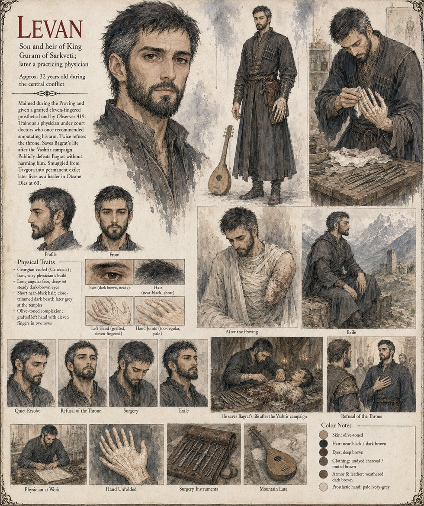

Levan
Son and heir of King Guram · physician · called Mikel in exile · about 14 at the Proving, 32 at the war · dies at 63
The King's son, older than Bagrat by fourteen months and quieter by nature, more drawn to the physicians' wing of the palace than to the training yards. At the Proving a re-buckled strap gives way and four inches of real, Auron-blessed steel come down across his raised left hand; he does not scream, and looks, the court thinks, almost apologetic. Over three nights a clockmaker fits him with an eleven-fingered hand, and it is Levan himself who counts the fingers first. No petition is ever filed to enter his name on the temple's succession rolls, because he never asks for one.
He spends the next eighteen years as a physician, apprenticed to the three court doctors who once agreed his arm would have to go: laying his instruments out left to right in the same count every time, brewing the same bitter mountain tea for frightened patients, and playing a four-stringed lute alone, badly, for the pleasure of failing at something that costs no one anything. He saves Bagrat's arm in a six-hour surgery, refuses the throne twice, wins the duel called the Answer without drawing blood, and is carried out of Tavgora on the night its outer wall falls by Otar and eleven of his former patients. In Otsane he is ‘Mikel’ to Keeper Amets, keeps a small, mostly unpaid surgery for thirty-one years, teaches four novices, writes the compendium he always wanted to write and leaves it to be copied freely, and dies there at sixty-three.
The sheet draws him lean and wiry, with long angular face, deep-set dark-brown eyes, near-black hair and a close-trimmed beard that greys at the temples, in undyed charcoal, the grafted hand pale ivory-grey; it gives his age as about thirty-two during the central conflict, which the manuscript's arithmetic supports.
“I want no crown. I only wanted to see you stand.”
Appears In

Related Subjects


Related Records

The Proving: a strap that was re-buckled twice gives way, and four inches of real steel come down across Levan's raised left hand. It is Bagrat, not Levan, who screams, dropping his own blade to catch his cousin before he falls.

Over three nights the clockmaker works on Levan's ruined hand while the two physicians present, sworn to silence, keep that oath more faithfully than any other they swear. No blood after the first hour, no fever after the second night: by the third morning, a hand lying pale and still on the pillow, too regular, too considered.

Levan wakes to eleven fingers, and counts them himself before any physician or the clockmaker can: two thumbs set opposite each other along one broad palm, four fingers in the row he can see, five more folded flat beneath it. His first thought is neither horror nor gratitude, but a small, shameful, private satisfaction at finding he can still count at all.

Keeper Amets receives the stranger Otar's men have delivered to her gate in Otsane, and tells Levan, before he has said a word about any of it, that Ardwen does not ask what his hands have done, only that he keep them open now.